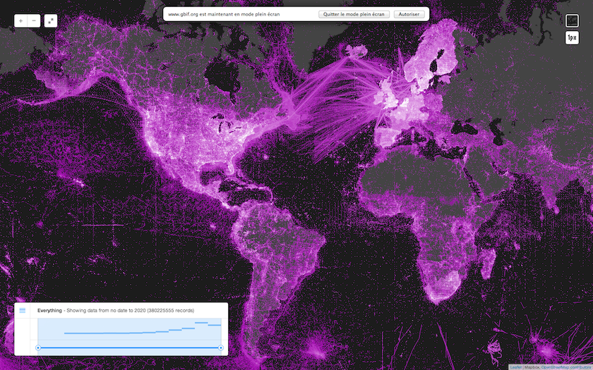
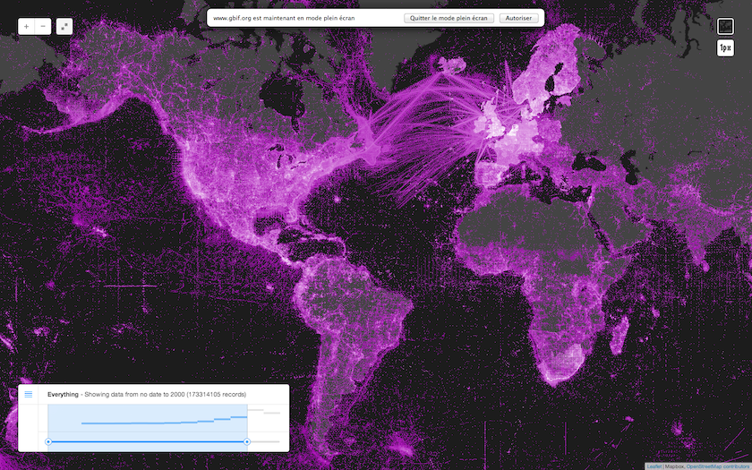
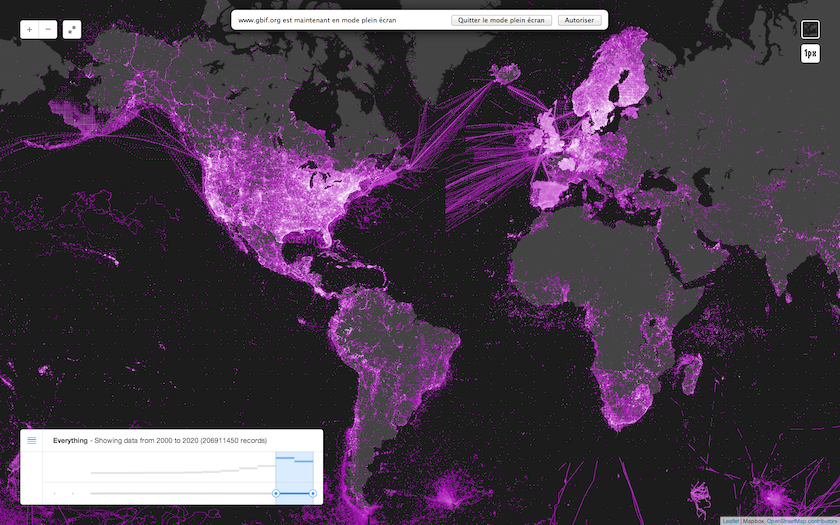
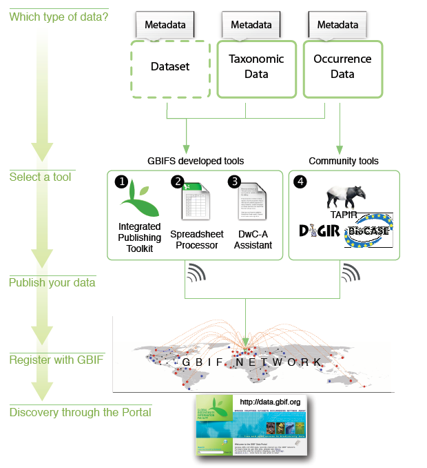
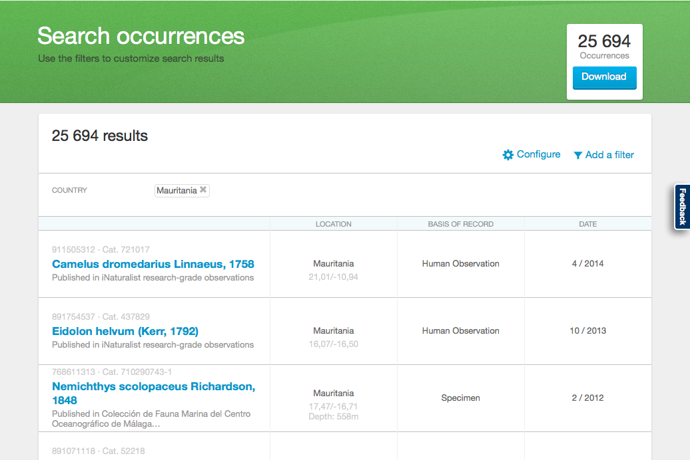
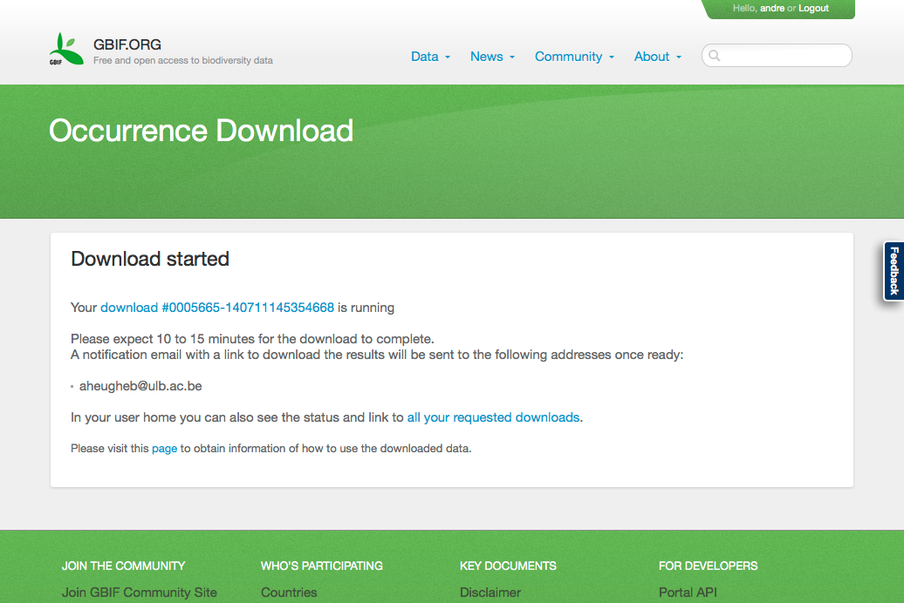
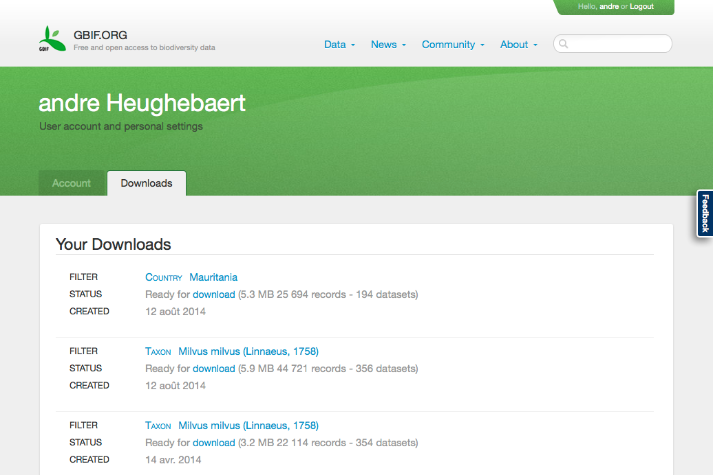

Publication de données
de Biodiversité au GBIF
Atelier CEBioS MRV, Septembre 2015
André Heughebaert
Belgian Biodiversity Platform
Contenu
1. Principes du GBIF
- Rendre accessible l'ensemble des données primaires
- L'accès est rapide, libre et gratuit
- L'éditeur de données décide lui-même de ce qu'il publie et des éventuelles restrictions d'utilisation.
- Les droits de propriété intellectuelle ne sont en rien modifiés par la publication au GBIF.
- L'éditeur est seul garant de la qualité et de la pérénnité des données.
voir GBIF and Open Access
1. Principes du GBIF
Engagements des différents acteurs
- Les pays signataires du Protocol d'accord(MoU) s'engagent à mettre en oeuvre un noeud national afin de développer le réseau dans le pays en y approuvant des institutions désireuses de publier des données.
- Les éditeurs signent un accord de partage.
- Les utilisateurs signent un accord d'utilisation.
1. Principes du GBIF
Accord de partage
- Biodiversity data accessible via the GBIF network are openly and universally available to all users within the framework of the GBIF Data Use Agreement and with the terms and conditions that the Data Publisher has identified in its metadata.
- GBIF does not assert any intellectual property rights in the data that is made available through its network.
- The Data Publisher warrants that they have made the necessary agreements with the original owners of the data that it can make the data available through GBIF network.
- The Data Publisher makes reasonable efforts to ensure that the data they serve are accurate.
- Responsibility regarding the restriction of access to sensitive data resides with the Data Publisher.
- The Data Publisher includes stable and unique identifiers in their data so that the owner of the data is known and for other necessary purposes.
- GBIF Secretariat may cache a copy and serve full or partial data further to other users together with the terms and conditions for use set by the Data Publisher. Queries of such data through the GBIF Secretariat are reported to the Data Publisher.
- Data Publishers are endorsed by a GBIF Participant, if applicable, before their metadata is made available by the GBIF Secretariat.
- GBIF Secretariat is not liable or responsible, nor are its employees or contractors, for the data contents or their use; or for any loss, damage, claim, cost or expense however it may arise, from an inability to use the GBIF network.
1. Principes du GBIF
Accord d'utilisation
- The quality and completeness of data cannot be guaranteed. Users employ these data at their own risk.
- Users shall respect restrictions of access to sensitive data.
- In order to make attribution of use for owners of the data possible, the identifier of ownership of data must be retained with every data record.
- Users must publicly acknowledge, in conjunction with the use of the data, the Data Publishers whose biodiversity data they have used. Data Publishers may require additional attribution of specific collections within their institution.
- Users must comply with additional terms and conditions of use set by the Data Publisher. Where these exist they will be available through the metadata associated with the data.
1. Principes du GBIF
Evolution prochaine
- La situation actuelle est assez complexe et difficile à appliquer.
- Les éditeurs seront amenés à choisir une license de type Creative Commons.
- Le Secrétariat prépare, avec la communauté, un code de conduite pour les éditeurs et les utilisateurs.
- Un mécanisme de citation via le système Digital Object Identifier(DOI) est à l'étude.
voir Consultations sur les Licenses et d'adoption des éditeurs
2. Pourquoi publier ses données?
2. Pourquoi publier ses données?
- Inventorier la Biodiversité du pays
- Comprendre son évolution et enrayer son déclin
- Décider sur base de connaissances scientifiques
- Renforcer la crédibilité des travaux/publications et augmenter la renommée des Auteurs et de leurs Institutions
- S'offrir de nouvelles opportunités de collaboration
- Permettre à de nouvelles recherches d'utiliser gratuitement les données publiques déjà receuillies
- Rapatrier les connaissances dans leur pays d'origine
- Etre citer par la publication d'un data paper
2. Pourquoi publier ses données?
Données historiques XIX-XX
173 millions d'occurrences, 25% de specimens
2. Pourquoi publier ses données?
Données récentes XXI
207 millions d'occurrences, < 4% de specimens
3.Rôles des intervenants

3.Rôles des intervenants
- Dans l'Institution:
- Auteur(s) des données
- (Contact Technique)
- (Contact Administratif)
- Au Noeud national:
- Gestionnaire du Noeud
- Technicien(s)
- Au Secrétariat:
- Développeurs
- Support
4.Propriété intellectuelle
- Le GBIF encourage la libre diffusion des données sur la biodiversité et, plus particulièrement :
- ne revendique aucun droit de propriété sur le contenu des bases de données constituées par d’autres organismes et subséquemment affiliées au GBIF;
- cherche dans toute la mesure du possible à rendre librement et facilement accessibles, avec un minimum de restrictions à leur réutilisation, toutes les données commandées, créées ou constituées directement par le GBIF;
- respecte les conditions fixées par les éditeurs de données qui décident d’affilier leurs bases de données au GBIF
4.Propriété intellectuelle
Mention de la source
- Le GBIF doit s’assurer que l’éditeur/détenteur des données est bel et bien mentionné et que les mentions de source sont maintenues lors des utilisations ultérieures des données.
4.Propriété intellectuelle
Droits de propriété intellectuelle sur les outils applicables à la biodiversité
- Le GBIF peut revendiquer les droits de propriété intellectuelle appropriés existants des instances nationales concernées sur tous les outils, comme des moteurs de recherche ou d’autres produits logiciels, conçus par le GBIF dans l’exécution de son programme de travail.
4.Propriété intellectuelle
Transfert de technologies
- Les participants reconnaissent que, sous réserve des droits de propriété intellectuelle pertinents, le GBIF doit s’efforcer de promouvoir le transfert non exclusif, selon des modalités mutuellement convenues et à des établissements de recherche, surtout dans les pays en développement, des technologies informatiques qui sont disponibles, en particulier en ce qui concerne les programmes de formation et de renforcement des capacités.
5.Que peut-on publier?
- Des occurrences:
- specimens de Collection
- observations
- Des listes d'espèces (=checklists)
- Des meta-données seules
(eg si les données sont pas numérisées)
5.Que peut-on publier?
- des descriptions d'espèces
- des mesures
- des échantillons
- des documents multimédia
- des séquences ADN
- des liens vers d'autres sites
6.Les données sensibles
“Qu'est-ce qu'une donnée sensible?”
- Toute donnée dont la publication est problématique:
- Pour l'espèce en question (eg braconnage)
- Pour l'observateur ou le collectionneur(eg législation)
- Pour l'auteur ou son institution
(eg embargo sur résultats non publiés)
6.Les données sensibles
“Que faire des données sensibles?”
- Ne pas les publier (métadonnées seulement)
- Ne les publier que partiellement (les données non problématiques)
- Omission ou floutage des coordonnées(eg grille 10x10km)
- Identifier le genre plutôt que l'espèce
7.Préparer la publication

Eulophia coutreziana, BRLU-Holotype
7.Préparer la publication
région, localité, coordonnées, latitude, longitude, incertitude
Aggui,Adrar,"21°10’N, 13°07’W",21.166666666666668,-13.116666666666667,1500
Amogjar pass,Adrar,"20°32’N, 12°48’W",20.533333333333335,-12.8,1500
Atar,Adrar,"20°31’N, 13°03’W",20.516666666666666,-13.05,1500
Ain Savra,Adrar,"19°32.416’N, 12°06.829’W",19.540266666666668,-12.113816666666667,100
Azougui,Adrar,"20°30’N, 13°10’W",20.5,-13.166666666666666,1500
{"usageKey":2440447,"scientificName":"Tursiops truncatus (Montagu, 1821)",
"canonicalName":"Tursiops truncatus","rank":"SPECIES","synonym":false,
"confidence":100,"matchType":"EXACT","kingdom":"Animalia","phylum":"Chordata",
"order":"Cetacea","family":"Delphinidae","genus":"Tursiops","species":"Tursiops truncatus",
"kingdomKey":1,"phylumKey":44,"classKey":359,"orderKey":733,"familyKey":5314,
"genusKey":2440446,"speciesKey":2440447,"class":"Mammalia"}
LRMgazetteer
Amogjar pass
Adrar
...
7.Préparer la publication
Pré-requis
- Les données à publier doivent être:
- sous forme électronique et dans un format exploitable
- structurées et compréhensibles par une machine
(eg CSV, JSON, SQL, XML) - expliquées & documentées
- nettoyées & validées
- pré-filtrées (ou filtrables) pour la publication
- identifiables de manière unique et durable
“C'est la partie la plus laborieuse du processus de publication!”
7.Préparer la publication
Occurrence_IDs
- Les bonnes pratiques à suivre:
- Ils doivent être uniques dans le jeu de données
- Ils doivent être stables dans le temps
- Ils devraient être uniques globalement
(eg 'urn:MRBIF:ENS:HNM:040661')
7.Préparer la publication
Les outils recommandés
- un bon éditeur de texte (eg Atom, Emacs, jEdit, Vim)
- QuantumGIS
- SQLite
- LibreOffice
- OpenRefine
- les webservices du GBIF
8.Comment publier?

8.Comment publier?
Outils recommandés
8.Comment publier?
IPT
“Démonstration de publication des données avec l'Integrated Publication Toolkit”
8.Comment publier?
Les Métadonnées
8.Comment publier?
Les Données
- Type: Occurrences, liste d'espèces ou metadonnées seules
- Conversion (quasi-automatique) en DarwinCore
9.Accès aux données

- Pré-requis:
- Créer un compte sur www.gbif.org
- Accepter l'accord d'utilisation
9.Accès aux données
Rechercher des données

Exemple: 25.694 occurrences pour la Mauritanie
9.Accès aux données
Télécharger des données

9.Accès aux données
Revoir ses téléchargements

9.Accès aux données

- Citations.txt: Comment citer les sources des données?
- Occurrence.txt: Données indexées par GBIF
- Rights.txt: Eventuelles restrictions d'utilisation
- Verbatim.txt: Données telles que publiées par l'éditeur
10.Utilisations
- Recherche basée sur des données extraites du GBIF:
- Quelques exemples sur le portail du GBIF
- Les articles scientifiques via Mendeley GBIF Public Library
(eg publications d'auteurs belges)
10.Utilisations
- La publication des données offre de nouvelles perspectives.
- Au niveau national,
elle décloisonne les chercheurs et les disciplines, les départements et les institutions. - Au niveau international,
elle permet de mieux gérer certaines problèmatiques (eg espèces migratrices, espèces invasives et zones frontalières).
Merci pour votre participation
André Heughebaert, Noeud Belge du GBIF

Fait avec reveal.js - HTML Presentations made easy